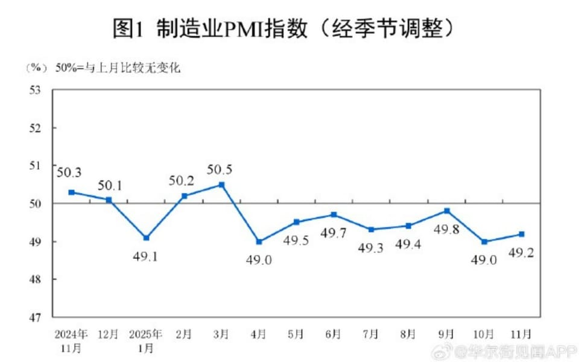

世界苦茶12月01日新闻 | 31条 | 香港大火死亡人数升至146

香港大火死亡人数升至146 | 新疆副主席陈伟俊被查 | 中国制造业PMI持续低于荣枯线 | 中国国考报考人数创新高
苦茶数据
美元兑人民币：7.07（昨日7.07，前日7.07）
美元兑日元：155.51（昨日156.20，前日156.32）
上证指数：3901（昨日3888，前日3885)
标普500指数：休市（昨日6812，前日6765）
比特币：86778（昨日91511，前日90848）
布伦特原油：63.29（昨日62.38，前日63.52）
中国新闻
• 新疆政府常务副主席陈伟俊被查 原党委书记马兴瑞动向引关注。
中国新疆政坛再现震荡，中共新疆自治区党委常委、政府常务副主席陈伟俊任上被查。与此同时，中共新疆自治区原党委书记马兴瑞被指缺席中共政治局集体学习，动向引发关注。中共中央纪委国家监委网站星期天通报，陈伟俊涉嫌严重违纪违法，正接受纪律审查和监察调查。公开资料显示，今年59岁的陈伟俊曾长期在浙江任职。他2014年出任湖州市长，2017年升任中共湖州市委书记，隔年出任浙江副省长，成为当时浙江最年轻的副省长。2018年，陈伟俊兼任中共温州市委书记，隔年跻身浙江省委常委。2021年5月，陈伟俊跨省履职，出任中共新疆自治区党委常委，一个月后兼任政府常务副主席，直至此番被查。
• 香港大火死亡人数升至146 民众悼念人龙绵延两公里。
香港大埔宏福苑大火的死亡人数升至146人，另有79人受伤，约40人仍失联。数以千计市民星期天赴大埔献花悼念死难者，人龙一度长达两公里。综合《明报》“香港01”等港媒报道，警方伤亡查询中心透露，截至30日下午4时，已确认146人在上星期三发生的大火中丧命，包括新寻获的18具遗体，死亡人数不排除会继续上升。在早前的失联者名单中，警方已联系上159人并确认他们安全，另有100宗个案被归类为“无法追查”，原因包括报案人提供的资料不全、报案人澄清亲友不住在宏福苑等。目前仍有约40人被列为失联者。警务处灾难遇害者辨认组主管郑嘉俊指出，由于大楼严重熏黑，现场照明不足，搜救困难重重。
• 中国国考报考人数创新高 98人抢一名额。
中国中央机关及直属机构考试星期日登场，计划招录3万8100人，共有371万8000人通过资格审查。通过资格审查人数与计划招录人数之比约为98比1，创下历史新高。据中新网报道，2026年国考计划招录人数较上年度减少1600人。由于招录年龄放宽，报考人数却创历史新高。此次国考，国家移民管理局瑞丽遣返中心“执行队一级警长及以下”一职成为最热门职位。截至报名结束前一小时，审查通过人数为6470，另有1121人待审查。该岗位招考一人，等于有6400多人抢一岗位。数据显示，从2023年到2026年，通过资格审查人数与计划录用人数之比逐年递增，分别约为70比1，77比1，86比1，98比1。
• 中国多省份严控财政较差地区出台更多或提高育儿补贴。
中国少子化问题严峻，但部分地方政府的财政状况同样严峻。多个省份明确，严格控制财政状况较差地区出台其他育儿补贴政策或提高补贴标准。据澎湃新闻报道，吉林省政府11月27日在官网发布《吉林省育儿补贴制度实施方案》，要求市级政府部门拟出台其他育儿补贴政策或提高补贴标准，应加强事前论证评估。对财政状况较差、基层“三保”保障不到位，或地方政府债务风险较高的地区，拟出台其他育儿补贴政策或提高补贴标准时，要严格加以控制。方案还明确，县级以下政府不得自行出台育儿补贴政策或标准。地市级原有政策属于按月或按年发放的，如补贴标准高于国家基础标准，可以继续执行原有标准，但不能叠加国家育儿补贴。
• 为何新疆问题给中国与叙利亚修复关系的努力投下了长久的阴影。
为什么新疆问题在中叙改善关系的努力中投下长长阴影 新的叙利亚政府需要援助重建，但北京对该国内部的维吾尔激进组织深感忧虑 但分析人士表示，双方首先需要克服的重大障碍是与中国新疆地区有关的激进组织融入叙利亚武装部队。他还敦促去年在巴沙尔·阿萨德倒台后成立的新叙利亚过渡政府，对那些曾与反对阿萨德政权斗争有关联的维吾尔激进组织采取行动。复旦大学中东研究中心主任孙德刚指出，北京在战后叙利亚重建中可发挥急需的作用。“叙利亚的首要任务是经济重建，这是中国可以发挥重要作用的领域，”孙德刚说。
印太新闻
• 印尼搜寻在致命洪水中失踪的数百人。
印尼搜寻数百名在致命洪灾中失踪者 印尼救援人员正在搜寻至少400名被报告失踪的人，许多人据信被掩埋在山体滑坡下。近一周前受气旋性降雨造成的灾难性洪灾后，苏门答腊岛的死亡人数已上升至440多人，政府表示。救援物资已通过空运和海运送往受灾地区，但一些村庄仍未收到任何援助，并有报道称有人为求生偷窃食物和水。连日暴雨和风暴重创泰国、马来西亚、菲律宾和斯里兰卡部分地区，影响数百万人，本月该地区死亡人数已超过900人。极为罕见的热带风暴“塞尼雅尔气旋”在印尼引发灾难性山体滑坡和洪水，房屋被冲走，数千栋建筑被淹没。国家灾难管理局表示，亚齐省、北苏门答腊省和西苏门答腊省有人失踪。
• 彭博社报道，普京访印期间印度将寻求采购俄罗斯战机和防空系统。
彭博社11月30日报道援引未公开消息人士称，印度预计在俄总统弗拉基米尔·普京下周访印期间，就购买俄制战机和先进防空系统进行推动。普京将于12月4日至5日访印，出席第23届印俄年度首脑会晤，正值新德里与美国关系降温之际。据彭博社消息，俄印双方预计将讨论可能采购第五代苏-57战机和S-500防空系统。美国总统唐纳德·特朗普今年早些时候曾向印度总理纳伦德拉·莫迪施压，要求停止购买俄罗斯石油，最终在7月对印度出口征收了25%的惩罚性关税，使美国对印度的总体关税率升至50%。莫迪在维持与俄罗斯历史性防务关系的同时，也与美国和欧洲保持接触。
• 一对夫妇被指控在澳大利亚赌场使用隐蔽摄像头和耳塞式耳机作弊，赢得近60万英镑。
一对来自哈萨克斯坦的夫妇被指控在澳大利亚一家赌场使用隐蔽摄像头和耳塞诈骗，赢得近60万英镑。新南威尔士警察称，悉尼中央巴兰加鲁街区一家赌场的工作人员注意到36岁的迪尔诺扎·伊斯拉伊洛娃在米老鼠T恤上佩戴着一个小巧隐蔽的摄像头，随后她和44岁的丈夫阿里谢里霍贾·伊斯拉伊洛夫被逮捕。警方搜查时发现了“磁化探针”和一个据称用于操控游戏的手机镜面附件。两人被控以不诚实获取财务利益罪，目前仍被拘押。新南威尔士警察表示，这对夫妇10月从哈萨克斯坦抵达悉尼，并在同一天申请了赌场会员资格。接下来的几周里，他们多次光顾赌场——据报道为悉尼海滨的皇冠赌场——累计赢款总额为A$1，179。
• 菲律宾数千人上街抗议腐败，要求归还从防洪工程中被盗的资金。
周日，数千名示威者包括天主教神职人员在菲律宾集会，要求对涉及腐败丑闻的高级立法者和官员迅速起诉。左翼团体在马尼拉主公园发起了另一场游行，直截了当地要求所有涉案政府官员立即辞职并接受起诉。费迪南德·马科斯二世总统一直在努力平息公众因大规模腐败而引发的愤怒。这些腐败被指导致多年易受致命洪水和极端天气影响的群岛上，防洪工程质量低劣、存在缺陷或根本未建成。大都会马尼拉部署了超过1.7万名警察，以维持两场不同示威的安全。马尼拉的马拉坎南总统府区处于安全封锁状态，重要通道和桥梁被防暴警察，卡车及带刺铁丝栏封锁。在这个严重分裂的民主国家。
科技新闻
• AI辅助购物成为假日购物季的热门话题。
人工智能辅助购物成为假日购物季热议话题 纽约 — 大型零售连锁和科技公司在假日购物季前推出或更新了人工智能工具，旨在为消费者提供更便捷的送礼体验，并争取更多线上消费份额。尽管由人工智能驱动的购物尚处于早期阶段，沃尔玛、亚马逊和谷歌等推出的购物助手和代理，比以往节日的聊天机器人功能更强。最新版本旨在提供个性化的商品推荐、跟踪价格，并可通过与顾客进行非脚本化“对话”代为下单。这些功能还叠加在像 OpenAI 的 ChatGPT 和谷歌 Gemini 等 AI 平台带来的购物更新之上。在本季最受关注的发布之一中，谷歌本月推出了一款 AI 代理。
• 半世纪后再登月 德国宇航员将飞往月球。
2025年11月30日欧洲航天局将参加未来美国“阿耳忒弥斯”登月任务，德国宇航员将获得首个名额。但特朗普重新评估该项目可能令其前景再添变数。欧洲航天局局长约瑟夫·阿施巴赫在不来梅举行的ESA部长级会议间隙宣布，一名德国宇航员将作为美国国家航空航天局“阿耳忒弥斯”计划的一部分飞往月球。他表示：“我已决定，首批参与月球任务的欧洲人将是来自德国、法国和意大利的ESA宇航员。” 德国将获得首个名额。至于ESA将派谁出征，阿施巴赫尚未透露。德国籍ESA宇航员亚历山大·格斯特和马蒂亚斯·毛雷尔此前都多次表达过登月的渴望。
经济新闻
• 闻泰科技上诉荷兰最高法院 要求恢复安世半导体控制权。
中资企业闻泰科技向荷兰最高法院提出上诉，要求恢复对子公司安世半导体的控制权。彭博社星期六报道，根据该社取得的法律文件，闻泰指控阿姆斯特丹企业法庭超越管辖权，允许安世管理层和荷兰政府影响裁决结果。上诉主要针对阿姆斯特丹企业法庭将安世股权移交给法院指定托管人的裁决。该法院还暂停了闻泰创始人张学政在安世的首席执行官职务，闻泰在诉状中对此提出质疑。闻泰辩称，荷兰政府获取对安世的控制权，对法院的裁决产生影响。有关控制权已暂时冻结，但未撤销。闻泰在上诉文件中指，法院采信了安世管理层和荷兰经济事务部的陈述，却没有给予闻泰回应的机会，构成了对正当程序“非同寻常且前所未有”的破坏。
• 工业生产仍现疲软：中国制造业PMI连续八个月低于荣枯线。
今年11月，中国制造业连续第八个月出现下滑，服务业也在降温。这使中国的决策者们面临两难抉择：继续推动艰难的结构性改革，还是应当出台更多刺激政策来提振内需？中国国家统计局周日发布的数据显示，11月份制造业采购经理指数PMI从10月的49.0小幅上升至49.2，但仍低于50这一标志增长和萎缩的荣枯线。此前，路透社进行的问卷调查中，分析师给出的预估值也是49.2，同官方现在公布的数据相互吻合。相关数据显示出，疫情过后中国企业一直处于复苏乏力的困境。此外，受美中贸易争端的影响，众多工厂和制造业受到严重冲击。
• 德国工业生产仍在继续迁至国外。
有越来越多的德国公司计划将生产线从德国转移到其他国家，美国关税在其中扮演了重要角色。作为目的地，中国和印度仍然是热门选项。审计公司德勤和德国工业联合会最近联合进行的一项调查显示，随着美国启动关税政策，越来越多的公司正在考虑部分或全部转移生产。被称为“供应链脉搏”的问询在今年9、10两月进行，制造业的148位供应链经理参与了调查，他们来自汽车、技术、机械工程、能源和化工行业。68%的受访德国工业企业表示，由于美国关税，他们计划在未来两到三年内，将全部或部分生产线迁出本土。除欧洲国家以外，最重要的目标地区是美国。
俄乌战争
• 在泽连斯基的一名高级助理辞职后，前军队总司令扎卢日内表示战后需要“政治变革”。
在泽连斯基首席顾问辞职后，前陆军总司令扎卢日内呼吁战后“政治变革” 乌克兰前军事总指挥瓦列里·扎卢日内在11月29日为《电讯报》撰写的评论文章中呼吁，一旦达成和平协议就应进行政治变革和改革。“和平，即便是在为下一场战争做准备的前景下，也为政治变革、深层改革、全面复苏、经济增长和公民回归提供了机会，”曾在2022年领导乌克兰抵御俄罗斯全面入侵并在国内颇受欢迎的扎卢日内写道。扎卢日内的表态正值泽连斯基面临其总统任期内最为动荡的政治时刻之一。
• 在匈牙利领导人访问莫斯科后，波兰总统取消了与欧尔班的会晤。
波兰总统卡罗尔·纳夫罗茨基在匈牙利总理维克托·欧尔班前往莫斯科讨论俄匈能源关系后取消了与欧尔班的会晤，纳夫罗茨基办公室11月30日表示。纳夫罗茨基与欧尔班原定在12月3日匈牙利举行的维谢格拉德集团总统峰会次日会面，届时捷克、匈牙利、波兰和斯洛伐克的总统将齐聚一堂。“总统K.纳夫罗茨基决定将其对匈牙利访问的行程仅限于维谢格拉德集团总统峰会，”波兰总统府国际政策办公室主任马尔钦·普日达奇在X上写道。普日达奇在提及欧尔班的莫斯科之行时写道：“欧洲的安全依赖于团结行动，包括在能源领域。” 欧盟正在逐步淘汰俄罗斯的天然气，核能和石油进口。
• 乌克兰情报部门发布了据称在被占扎波罗热州对车臣战士袭击的视频。
乌克兰情报部门发布视频称在俄占区袭击车臣武装分子 乌克兰军情局11月30日发布了一段视频，称在俄占的扎波罗热州部分地区实施的一次行动中，破坏了声名狼藉的车臣武装分子出售被盗柴油的行为。HUR在其Telegram上报道说，该局与游击队合作，在被占领的扎波罗热州别尔江斯克区一个阿赫马特单位成员——被称为“卡德罗维特人”的车臣部队——售卖赃油的地点制造了两次爆炸。HUR称，驻占领区的乌克兰游击队发现了这一敛财计划，并在现场布置了地雷，11月29日击中两辆车辆。乌克兰情报表示，伤亡人数正在核实中。《基辅独立报》无法核实该视频的真实性。别尔江斯克是扎波罗热州东南部的一个港口城市。
• 鲁比奥和维特科夫在佛罗里达会见乌克兰的谈判代表。
美国和乌克兰官员周日完成了大约四小时的会谈，旨在寻找结束俄乌战争的收场方案。国务卿马尔科·鲁比奥会后告诉记者，这次会谈富有成效，但在寻求和平协议方面仍有工作要做。“这不仅仅关乎结束战斗的条款，”鲁比奥说。“同样重要的是那些为乌克兰长期繁荣奠定基础的条款我认为我们今天在这方面有所推进，但还有更多工作要做。” 这场在佛州举行的高层谈判是在总统唐纳德·特朗普的特别代表史蒂夫·威特科夫几天后将前往莫斯科会见俄罗斯领导人弗拉基米尔·普京之际进行的。
• 乌克兰与挪威将从2026年起共同生产无人机。
乌克兰与挪威同意共同生产无人机，试生产线将于2026年启动，乌克兰总理丹尼斯·什米哈尔11月30日宣布。什米哈尔在与挪威同行托雷·O·桑德维克签署相应协议后作出该声明。此举标志着基辅与奥斯陆关系深化，乌克兰在俄罗斯持续全面入侵及美国军事支援减少的背景下，寻求扩大本国防务工业。乌克兰方面将分享其经验与创新，挪威则将提供“强大的生产基础，并与挪威领先机构开展研发合作”，这位乌克兰领导人指出。无人机已成为乌克兰战场上日益重要的工具，被乌克兰和俄罗斯用于前线行动及远程打击。基辅也在与英国就每月生产2000架拦截无人机进行谈判。
• 过去一天俄罗斯对乌克兰的袭击造成5人死亡、38人受伤。
地区当局于11月30日凌晨报告，俄罗斯在过去一天对乌克兰的袭击已造成至少5名平民死亡、至少38人受伤。乌克兰空军称在夜间拦截了俄罗斯发射的122架无人机中的104架。俄罗斯还从被占克里米亚发射了两枚弹道导弹。在基辅州，11月30日夜间的无人机袭击在距基辅北部约15公里的维什霍罗德造成1人死亡、19人受伤。基辅州州长米科拉·卡拉什尼克报告称，伤者中有4名儿童，11人因烧伤、弹片伤和吸入烟雾被送医。总统弗拉基米尔·泽连斯基在11月30日的Telegram贴文中对遇难者表示慰问。在赫尔松州，俄罗斯袭击造成2人死亡、7人受伤。州长奥列克桑德·普罗库丁报告称，11处房屋及私家车受损。
• 俄罗斯将“人权观察”列为“不受欢迎组织”。
11月28日，俄罗斯司法部将人权观察列为“不得人心组织”，实际上禁止该组织在该国开展活动。人权观察指出，俄罗斯已在2022年迫使其关闭了莫斯科办事处。“我们的工作没有改变，但发生了戏剧性变化的是政府对独裁政策的全面拥抱、镇压的惊人升级，以及其部队在乌克兰所犯战争罪行的规模，”人权观察执行董事菲利普·博洛庇翁说。俄罗斯总检察院最初于11月10日对该组织发布了禁令。根据俄罗斯颇具争议的“不受欢迎组织”法，此类组织被禁止在俄罗斯境内活动，个人参与其活动将构成刑事犯罪。该法遭到人权倡导者的广泛批评。此举凸显自2022年全面入侵以来，克里姆林宫对民间社会和国际组织的打压日益加剧。
世界新闻
• 委内瑞拉总统马杜罗看起来很绝望，但他的策略难以捉摸。
曾几何时，英语词汇曾令委内瑞拉总统尼古拉斯·马杜罗大为光火，他甚至在国情咨文的听众面前敦促逐步淘汰“skatepark”和“fashion”等词。但当白宫正考虑是否应由美军对委内瑞拉采取打击行动时，马杜罗却开始使用英语，高唱约翰·列侬的《Imagine》，呼吁和平，并随着其最新英语口号“No WarYes Peace”的混音起舞。尽管反对派支持者将他的转变视为绝望的信号，并反复向在华盛顿支持他们的人表示军事行动的威胁将打破马杜罗的亲信圈，但数月来的压力仍未导致人心离散或政府过渡。忠诚与惩罚 支撑他维持权力的。
• 委内瑞拉称特朗普呼吁关闭领空为“殖民主义威胁”。
委内瑞拉谴责特朗普呼吁关闭领空为“殖民主义威胁” 委内瑞拉政府谴责了特朗普周六呼吁关闭委内瑞拉上空领空的声明。在其Truth Social帖子中，特朗普写道：“致所有航空公司、飞行员、毒贩和人口贩子，请将包围并位于委内瑞拉上空的领空全部视为关闭状态。” 委内瑞拉政府在一份声明中回应称，特朗普的言论违反国际法，是对该国主权的“殖民主义威胁”。声明称：“委内瑞拉国家体制以外的任何权力均无权干涉、封锁或附条件使用国际领空。” 截至周日下午，Flightradar24显示仍有飞机飞越委内瑞拉领空。此事发生在参议院和众议院武装服务委员会表示将就五角大楼展开调查的一天后。此前《华盛顿邮报》报道称。
• 《疯狂动物城2》以5.56亿美元的首映成绩创下全球票房纪录。
《疯狂动物城2》以5.56亿美元的全球票房开局创纪录 迪士尼出品的动物城市动画续集《疯狂动物城2》在票房上迎来轰动且创纪录的开局。根据周日公司估计，该片周末在北美收获9600万美元，感恩节五天档累计1.56亿美元，自周三上映以来全球累计达到5.56亿美元。这一成绩使其成为动画片史上最高的国际开画、各类影片第四高的全球首映，以及2025年迄今为止的最佳国际开画。环球影业的《邪恶：为了永远》在第二个周末依然保持强劲，周末在北美再收6280万美元，北美总票房达到2.704亿美元。该片下半部在国际市场累计收入3.93亿美元。
• 议员们表示支持国会审查特朗普对船只实施的军事打击。
两党议员周日表示，他们支持国会对美国在加勒比海和东太平洋对被怀疑走私毒品的船只实施军事打击的事件进行审查。此前有报道称，国防部长皮特·赫格塞斯发出了口头命令，要求在9月2日的一次袭击中杀死所有船员。议员们表示，他们不知道《华盛顿邮报》上周的报道是否属实，有些共和党人对此表示怀疑，但他们认为对初次导弹袭击后的幸存者进一步发动攻击会带来严重的法律问题。“如果属实，这已上升到战争罪的程度，”弗吉尼亚州民主党参议员蒂姆·凯恩说。俄亥俄州共和党众议员迈克·特纳在被问及针对已无战斗能力者的后续打击时表示。
• 教皇利奥十四世再次重申坚持通过两国方案解决以色列—巴勒斯坦冲突。
教皇利奥十四在空中再次重申坚持以两国方案解决以巴冲突的立场 教皇利奥十四在空中再次重申坚持以两国方案解决以巴冲突的立場 航班上——教皇利奥十四周日在首次空中记者会上再次强调，圣座坚持通过两国方案解决以色列—巴勒斯坦冲突，称这是“唯一能为双方保证正义的解决办法”。利奥在从伊斯坦布尔飞往贝鲁特，开启作为教皇访行的第二段也是最后一段行程时发表了上述言论。尽管利奥此前在他的乡间别墅与媒体非正式见面回答记者提问，这次简短会面标志着他作为教皇的首场新闻发布会，延续了历任教皇在出访时与媒体接触的传统。
• 瑞士选民否决对超级富豪征税及要求女性履行公民义务的提案。
瑞士选民在周日的公投中以压倒性多数否决了两项倡议：一项提议对超级富豪征收50%的遗产税，另一项则建议将义务公民服务或兵役扩大到女性。根据周日中午投票结束后的初步预测，约84%选民反对将公民义务扩展到女性，约79%反对遗产税倡议。该遗产税提案主张对超过5000万瑞士法郎免税额的遗产征收50%税率，并将所得资金用于缓解气候变化的措施。该提案由左翼社会民主党青年组织提出。
• SNAP福利已恢复，但许多美洲原住民仍然面临粮食不安全问题。
补充营养援助计划已经恢复，但许多美洲原住民仍在与食物不安全作斗争 环绕蒙大拿州西北部弗莱特黑德保留地的雪山预示着冬天即将来临。玛丽·莱夫特汉德把卡车开到山谷下的一个仓库。她越过圣伊格内修斯镇，去领取由萨利什和库塔尼联邦部落运营的免费商品配给食物。部落商品配给项目由联邦资助，但并未受到联邦政府停摆的影响。不像补充营养援助计划，后者曾面临严重威胁。在政府停摆期间，SNAP的4100万受益人不知道11月是否还能收到救助金。莱夫特汉德本来就领取SNAP。她更喜欢SNAP，因为凭SNAP她可以去杂货店挑选自己想要的东西。但在停摆期间，随着对SNAP发放的不确定性加剧，她愈发焦虑。
• 吉尔吉斯斯坦在打压反对派之际举行提前议会选举。
中亚国家吉尔吉斯斯坦周日举行提前议会选举，反对派人物被逮捕，独立媒体被关闭的背景笼罩着这次投票。此次投票预计将巩固总统萨迪尔·扎帕罗夫的掌控，他一直在试图压制这个曾经是中亚最具民主性的国家的异议声音。吉尔吉斯斯坦的投票站周日当地时间上午8点开门，12小时后关闭，但一些境外投票站将开放到周一上午。地方媒体报道，选举结果将在接下来的两周内最终确定。此次投票比原定时间提前一年举行，官员们为此辩解称，否则议会选举将与2027年总统选举时间过于接近。吉尔吉斯斯坦的选举制度也发生了大规模变化，30个选区各选举三名议员。中央选举委员会称。
• 美国加利福尼亚州斯托克顿市一宴会厅发生枪击案，造成4人死亡、10人受伤。
加州斯托克顿一宴会厅枪击案致4死10伤 加州斯托克顿——萨克拉门托以南约40英里、人口约32万的斯托克顿市一处宴会厅周六发生枪击案，警方称在一次家庭聚会中有4人死亡、10人受伤。圣瓦金县警长办公室发言人希瑟·布伦特表示，受害者包括儿童和成年人。布伦特在案发现场的新闻发布会上说，早期迹象“可能表明这是一次有针对性的事件”。当地官员表示，疑犯尚未被捕，并恳请公众提供帮助。侦探仍在努力确定可能的作案动机。圣瓦金县检察官朗·弗雷塔斯在新闻发布会上说：“如果你有关于该人的任何信息，请立即联系我们。如果你就是这个人，请立即自首。
• 洪都拉斯人在特朗普以援助威胁的阴影下投票。
洪都拉斯人在受特朗普援助威胁阴影下投票 洪都拉斯正在举行一次全国大选，而美国总统唐纳德·特朗普的威胁成为此次选举的主导话题。选票上有五位总统候选人，但民调普遍把竞争看作是三方之争：左翼自由重建党前国防部长里克西·蒙卡达、中间派自由党电视主持人萨尔瓦多·纳斯拉拉和右翼国家党商人纳斯里“蒂托”·阿斯富拉。特朗普公开支持阿斯富拉，并威胁若他落选将削减对该中美洲国家的财政援助。最近民调显示纳斯拉拉领先，但有34%的选民仍表示未决定，选情仍未明朗。洪都拉斯总统仅能连任一次四年任期，现任总统希奥玛拉·卡斯特罗在2021年就任时曾成为该国首位女总统，代表自由重建党，本次未参选并已支持蒙卡达接替其职位。